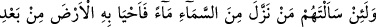
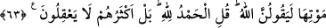

bilir ve ona genişletir. Aynı şekilde daraltmaya lâyık olanı da bilir ve ona rızkını
daraltır. Yahut da bir kimseye, hikmet ve maslahata göre rızkı bir vakitte genişletir,
diğer bir vakitte de daraltır; her birini kendi vaktinde yapar.
Kudsî hadiste buyrulmuştur ki: “Kullarımdan öylesi vardır ki, onun îmanını ancak
zenginlik ıslah eder. Şayet onu fakirleştirsem, bu onun îmanını bozar. Öylesi de
vardır ki, îmanını ancak fakirlik ıslah eder. Şayet onu zenginleştirsem, bu da onun
îmanını ifsâd eder.”
63. Andolsun ki onlara: “Gökten su indirip onunla ölümünün ardından yeryüzünü
canlandıran kimdir?” diye sorsan, mutlaka, “Allah” derler. De ki: (Öyleyse) hamd
da Allah’a mahsustur. Fakat onların çoğu (söyledikleri üzerinde) düşünmezler.
“Andolsun ki onlara:” yâni müşrik Araplara: “Gökten su indirip onunla ölümünün
ardından yeryüzünü canlandıran” yâni kuru ve çorak olup ölü hale geldikten sonra yeri
tekrar diriltip orada ot ve ağaçları çıkaran “kimdir?” diye sorsan, mutlaka, “Allah”
“derler.”
Yani, onlar Allah’ın bu âlemin tümünü usûl ve furûuyla hepsini yarattığını ve yoktan
var ettiğini itiraf ederler. Sonra da herhangi bir şeye asla gücü yetmeyen bazı
mahlûkları Allah’a ortak koşarlar.
Ot bitmeyen yerlere “ölü arâzî” denilir; çünkü ölüden faydalanılmadığı gibi, bu
yerlerden de faydalanılmaz.
“De ki: (Öyleyse) hamd da Allah’a mahsustur.”
Yâni övgüye lâyık olan Allah’tır. Hakkı, bâtıl ehlinin cesâret edemeyeceği tarzda
kılan ve senin huccetini de onlara gâlib ve üstün getiren O’dur.
“Fakat onların” kâfirlerin “çoğu (söyledikleri üzerinde) düşünmezler.”
Onlar, yukarıdaki söz ve itiraflarının gereğini yerine getirmezler, ona göre amel
etmezler; mahlukatın en değersizi olan putları O’na ortak koşarlar.
Fakir (Bursevî) –Kadîr olan Allah onu istiğnâ hâline erdirsin– der ki: Allah Teâlâ
önce rızık âyetini sonra tevhid âyetini zikretti; sonra iki yerde bunları tekrar hatırlattı.
O, böyle yapmakla mü’min kullarına şunu tenbih etmiştir: Allah Teâlâ, küfür ve
günahlarına rağmen kâfir kullarının rızkını kesmezken, kendisine îman edip ibâdet eden
mü’min kullarının rızkını nasıl keser?
Ey Rabbim, senin hazinenden, ateşperest de Hıristiyan da nasiplenir